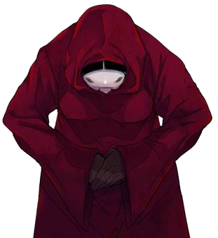

Script 00001C43

お疲れ様でございました、あなた様。これで死月編は終わりです。
まだまだ謎は多いようですが、ひとまず誰も死なずに生存できるルートは確かにあったようです。
では、残りも少なくなってまいりました。次の編で終わりでございます。
彼女たちがどのようにして幸せな結末に至るのか――ともに見届けましょう。

緑の目……？
ああ、新村春花の目のことですか。
目の色と言うのは、病気やけがでも変化すると聞いたことがあります。
ですから、そんなに気にすることでもないと思いますわ。
あら？ もしかしてお忘れでしょうか？
真相を知ることは求められていないのです。あくまでも、彼女たちの幸せな結末を見ることが目的。
だったら、すべての謎が解けるかどうかなんて、さほど問題とすることではございません。